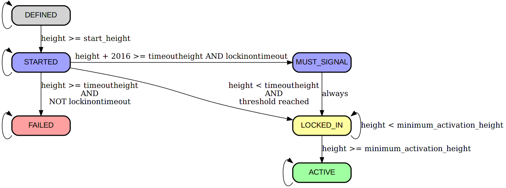

BIP: 8
Title: Version bits with lock-in by height
Authors: Shaolin Fry <shaolinfry@protonmail.ch>
Luke Dashjr <luke+bip@dashjr.org>
Status: Draft
Type: Informational
Assigned: 2017-02-01
License: BSD-3-Clause OR CC0-1.0
Abstract
This document specifies an alternative to BIP9 that corrects for a number of perceived mistakes. Block heights are used for start and timeout rather than POSIX timestamps. It additionally introduces an activation parameter that can guarantee activation of backward-compatible changes (further called "soft forks").
The key words "MUST", "MUST NOT", "REQUIRED", "SHALL", "SHALL NOT", "SHOULD", "SHOULD NOT", "RECOMMENDED", "MAY", and "OPTIONAL" in this document are to be interpreted as described in RFC 2119.
Motivation
BIP9 introduced a mechanism for doing parallel soft forking deployments based on repurposing the block nVersion field. Activation is dependent on near unanimous hashrate signalling which may be impractical and result in veto by a small minority of non-signalling hashrate. Super majority hashrate based activation triggers allow for accelerated activation where the majority hash power enforces the new rules in lieu of full nodes upgrading. Since all consensus rules are ultimately enforced by full nodes, eventually any new soft fork will be enforced by the economy. This proposal combines these two aspects to provide optional flag day activation after a reasonable time, as well as for accelerated activation by majority of hash rate before the flag date.
Due to using timestamps rather than block heights, it was found to be a risk that a sudden loss of significant hashrate could interfere with a late activation.
Block time is somewhat unreliable and may be intentionally or unintentionally inaccurate, so thresholds based on block time are not ideal. Secondly, BIP9 specified triggers based on the first retarget after a given time, which is non-intuitive. Since each new block must increase the height by one, thresholds based on block height are much more reliable and intuitive and can be calculated exactly for difficulty retarget.
Specification
Parameters
Each soft fork deployment is specified by the following per-chain parameters (further elaborated below):
- The name specifies a very brief description of the soft fork, reasonable for use as an identifier.
- The bit determines which bit in the nVersion field of the block is to be used to signal the soft fork lock-in and activation. It is chosen from the set {0,1,2,...,28}.
- The startheight specifies the height of the first block at which the bit gains its meaning.
- The timeoutheight specifies a block height at which the miner signalling ends. Once this height has been reached, if the soft fork has not yet locked in (excluding this block's bit state), the deployment is considered failed on all descendants of the block.
- The threshold specifies the minimum number of block per retarget period which indicate lock-in of the soft fork during the subsequent period.
- The minimum_activation_height specifies the height of the first block at which the soft fork is allowed to become active.
- The lockinontimeout boolean if set to true, blocks are required to signal in the final period, ensuring the soft fork has locked in by timeoutheight.
Selection guidelines
The following guidelines are suggested for selecting these parameters for a soft fork:
- name should be selected such that no two softforks, concurrent or otherwise, ever use the same name. For deployments described in a single BIP, it is recommended to use the name "bipN" where N is the appropriate BIP number.
- bit should be selected such that no two concurrent softforks use the same bit. The bit chosen should not overlap with active usage (legitimately or otherwise) for other purposes.
- startheight should be set to some block height in the future. If minimum_activation_height is not going to be set, then startheight should be set to a height when a majority of economic activity is expected to have upgraded to software including the activation parameters. Some allowance should be made for potential release delays. If minimum_activation_height is going to be set, then startheight can be set to be soon after software with parameters is expected to be released. This shifts the time for upgrading from before signaling begins to during the LOCKED_IN state.
- timeoutheight should be set to a block height when it is considered reasonable to expect the entire economy to have upgraded by, probably at least 1 year, or 52416 blocks (26 retarget intervals) after startheight.
- threshold should be 1815 blocks (90% of 2016), or 1512 (75%) for testnet.
- minimum_activation_height should be set to several retarget periods in the future if the startheight is to be very soon after software with parameters is expected to be released. minimum_activation_height should be set to a height when a majority of economic activity is expected to have upgraded to software including the activation parameters. This allows more time to be spent in the LOCKED_IN state so that nodes can upgrade. This may be set to 0 to have the LOCKED_IN state be a single retarget period.
- lockinontimeout should be set to true for any softfork that is expected or found to have political opposition from a non-negligible percent of miners. (It can be set after the initial deployment, but cannot be cleared once set.)
A later deployment using the same bit is possible as long as the startheight is after the previous one's timeoutheight or activation, but it is discouraged until necessary, and even then recommended to have a pause in between to detect buggy software.
startheight, timeoutheight, and minimum_activation_height must be an exact multiple of 2016 (ie, at a retarget boundary), and timeoutheight must be at least 4032 blocks (2 retarget intervals) after startheight.
States
With each block and soft fork, we associate a deployment state. The possible states are:
- DEFINED is the first state that each soft fork starts out as. The genesis block is by definition in this state for each deployment.
- STARTED for blocks at or beyond the startheight.
- MUST_SIGNAL for one retarget period prior to the timeout, if LOCKED_IN was not reached and lockinontimeout is true.
- LOCKED_IN for at least one retarget period after the first retarget period with STARTED (or MUST_SIGNAL) blocks of which at least threshold have the associated bit set in nVersion. A soft fork remains in LOCKED_IN until at least minimum_activation_height is reached.
- ACTIVE for all blocks after the LOCKED_IN state.
- FAILED for all blocks after the timeoutheight if LOCKED_IN is not reached.
Bit flags
The nVersion block header field is to be interpreted as a 32-bit little-endian integer (as present), and bits are selected within this integer as values (1 << N) where N is the bit number.
Blocks in the STARTED state get an nVersion whose bit position bit is set to 1. The top 3 bits of such blocks must be 001, so the range of actually possible nVersion values is [0x20000000...0x3FFFFFFF], inclusive.
Due to the constraints set by BIP 34, BIP 66 and BIP 65, we only have 0x7FFFFFFB possible nVersion values available. This restricts us to at most 30 independent deployments. By restricting the top 3 bits to 001 we get 29 out of those for the purposes of this proposal, and support two future upgrades for different mechanisms (top bits 010 and 011). When a block nVersion does not have top bits 001, it is treated as if all bits are 0 for the purposes of deployments.
Miners should continue setting the bit in LOCKED_IN phase so uptake is visible, though this has no effect on consensus rules.
New consensus rules
The new consensus rules for each soft fork are enforced for each block that has ACTIVE state.
During the MUST_SIGNAL phase, if (2016 - threshold) blocks in the retarget period have already failed to signal, any further blocks that fail to signal are invalid.
State transitions

Note that when lockinontimeout is true, the LOCKED_IN state will be reached no later than at a height of timeoutheight. Regardless of the value of lockinontimeout, if LOCKED_IN is reached, ACTIVE will be reached either one retarget period later, or at minimum_activation_height, whichever comes later.
The genesis block has state DEFINED for each deployment, by definition.
State GetStateForBlock(block) {
if (block.height == 0) {
return DEFINED;
}
All blocks within a retarget period have the same state. This means that if floor(block1.height / 2016) = floor(block2.height / 2016), they are guaranteed to have the same state for every deployment.
if ((block.height % 2016) != 0) {
return GetStateForBlock(block.parent);
}
Otherwise, the next state depends on the previous state:
switch (GetStateForBlock(GetAncestorAtHeight(block, block.height - 2016))) {
We remain in the initial state until we reach the start block height.
case DEFINED:
if (block.height >= startheight) {
return STARTED;
}
return DEFINED;
After a period in the STARTED state, we tally the bits set, and transition to LOCKED_IN if a sufficient number of blocks in the past period set the deployment bit in their version numbers. If the threshold hasn't been met, lockinontimeout is true, and we are at the last period before the timeout, then we transition to MUST_SIGNAL. If the threshold hasn't been met and we reach the timeout, we transition directly to FAILED.
Note that a block's state never depends on its own nVersion; only on that of its ancestors.
case STARTED:
int count = 0;
walk = block;
for (i = 0; i < 2016; i++) {
walk = walk.parent;
if (walk.nVersion & 0xE0000000 == 0x20000000 && (walk.nVersion >> bit) & 1 == 1) {
++count;
}
}
if (count >= threshold) {
return LOCKED_IN;
} else if (lockinontimeout && block.height + 2016 >= timeoutheight) {
return MUST_SIGNAL;
} else if (block.height >= timeoutheight) {
return FAILED;
}
return STARTED;
If we have finished a period of MUST_SIGNAL, we transition directly to LOCKED_IN.
case MUST_SIGNAL:
return LOCKED_IN;
After at least one retarget period of LOCKED_IN, we automatically transition to ACTIVE if the minimum activation height is reached. Otherwise LOCKED_IN continues.
case LOCKED_IN:
if (block.height >= minimum_activation_height) {
return ACTIVE;
} else {
return LOCKED_IN;
}
And ACTIVE and FAILED are terminal states, which a deployment stays in once they're reached.
case ACTIVE:
return ACTIVE;
case FAILED:
return FAILED;
}
}
Implementation It should be noted that the states are maintained along block chain branches, but may need recomputation when a reorganization happens.
Given that the state for a specific block/deployment combination is completely determined by its ancestry before the current retarget period (i.e. up to and including its ancestor with height block.height - 1 - (block.height % 2016)), it is possible to implement the mechanism above efficiently and safely by caching the resulting state of every multiple-of-2016 block, indexed by its parent.
Mandatory signalling
Blocks received while in the MUST_SIGNAL phase must be checked to ensure that they signal as required. For example:
if (GetStateForBlock(block) == MUST_SIGNAL) {
int nonsignal = 0;
walk = block;
while (true) {
if ((walk.nVersion & 0xE0000000) != 0x20000000 || ((walk.nVersion >> bit) & 1) != 1) {
++nonsignal;
if (nonsignal > 2016 - threshold) {
return state.Invalid(BlockValidationResult::RECENT_CONSENSUS_CHANGE, "bad-version-bip8-must-signal");
}
}
if (walk.nHeight % 2016 == 0) {
// checked every block in this retarget period
break;
}
walk = walk.parent;
}
}
Implementations should be careful not to ban peers that send blocks that are invalid due to not signalling (or blocks that build on those blocks), as that would allow an incompatible chain that is only briefly longer than the compliant chain to cause a split of the p2p network. If that occurred, nodes that have not set lockinontimeout may not see new blocks in the compliant chain, and thus not reorg to it at the point when it has more work, and would thus not be following the valid chain with the most work.
Implementations with lockinontimeout set to true may potentially follow a lower work chain than nodes with lockinontimeout set to false for an extended period. In order for this not to result in a net split nodes with lockinontimeout set to true, those nodes may need to preferentially connect to each other. Deployments proposing that implementations set lockinontimeout to true should either use parameters that do not risk there being a higher work alternative chain, or specify a mechanism for implementations that support the deployment to preferentially peer with each other.
Warning mechanism
To support upgrade warnings, an extra "unknown upgrade" is tracked, using the "implicit bit" mask = (block.nVersion & ~expectedVersion) != 0. Mask will be non-zero whenever an unexpected bit is set in nVersion. Whenever LOCKED_IN for the unknown upgrade is detected, the software should warn loudly about the upcoming soft fork. It should warn even more loudly after the next retarget period (when the unknown upgrade is in the ACTIVE state).
getblocktemplate changes
The template request Object is extended to include a new item:
| template request | |||
|---|---|---|---|
| Key | Required | Type | Description |
| rules | No | Array of Strings | list of supported softfork deployments, by name |
The template Object is also extended:
| template | |||
|---|---|---|---|
| Key | Required | Type | Description |
| rules | Yes | Array of Strings | list of softfork deployments, by name, that are active state |
| vbavailable | Yes | Object | set of pending, supported softfork deployments; each uses the softfork name as the key, and the softfork bit as its value |
| vbrequired | No | Number | bit mask of softfork deployment version bits the server requires enabled in submissions |
The "version" key of the template is retained, and used to indicate the server's preference of deployments. If versionbits is being used, "version" MUST be within the versionbits range of [0x20000000...0x3FFFFFFF]. Miners MAY clear or set bits in the block version WITHOUT any special "mutable" key, provided they are listed among the template's "vbavailable" and (when clearing is desired) NOT included as a bit in "vbrequired". Servers MUST set bits in "vbrequired" for deployments in MUST_SIGNAL state, to ensure blocks produced are valid.
Softfork deployment names listed in "rules" or as keys in "vbavailable" may be prefixed by a '!' character. Without this prefix, GBT clients may assume the rule will not impact usage of the template as-is; typical examples of this would be when previously valid transactions cease to be valid, such as BIPs 16, 65, 66, 68, 112, and 113. If a client does not understand a rule without the prefix, it may use it unmodified for mining. On the other hand, when this prefix is used, it indicates a more subtle change to the block structure or generation transaction; examples of this would be BIP 34 (because it modifies coinbase construction) and 141 (since it modifies the txid hashing and adds a commitment to the generation transaction). A client that does not understand a rule prefixed by '!' must not attempt to process the template, and must not attempt to use it for mining even unmodified.
Reference implementation
https://github.com/bitcoin/bitcoin/compare/master...luke-jr:bip8
Contrasted with BIP 9
- The lockinontimeout flag is added, providing a way to guarantee transition to LOCKED_IN.
- Block heights are used for the deployment monotonic clock, rather than median-time-past.
Backwards compatibility
BIP8 and BIP9 deployments should not share concurrent active deployment bits. Nodes that only implement BIP9 will not activate a BIP8 soft fork if hashpower threshold is not reached by timeoutheight, however, those nodes will still accept the blocks generated by activated nodes.
Deployments
A living list of deployment proposals can be found here.
References
Copyright
This document is dual licensed as BSD 3-clause, and Creative Commons CC0 1.0 Universal.